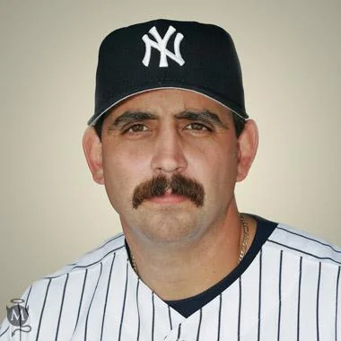

Sal Fasano
Career Highlights & Facts
(Facts are AI-generated and may require verification)
- Recognized by a signature, thick handlebar mustache that became a cult favorite among fans.
- Served as a reliable defensive catcher who spent time behind the plate for multiple major league clubs.
- Transitioned into a coaching role after concluding a professional playing career that spanned over a decade.
Would you like to find out more about Sal Fasano?
Player Biography
Sal Fasano January 4, 2012 / in BioProject - Person / by admin This article is assigned to 2002 Anaheim Angels book Full Name Salvatore Frank Fasano Born August 10, 1971 at Chicago, IL (USA) Stats Baseball Reference Retrosheet If you can help us improve this player’s biography, contact us . Tags None Share this entry Share on Facebook Share on X Share on LinkedIn Share on Reddit Share by Mail
Wikipedia Summary:
Salvatore Frank Fasano is an American former professional baseball catcher, who played for nine different Major League Baseball (MLB) teams over his 11–year big league career. Upon retiring as a player, he became a coach within the Toronto Blue Jays organization between 2010 and 2016. After coaching for a single season within the Los Angeles Angels minor league system, Fasano joined the major league coaching staff of the Atlanta Braves. He currently serves as the assistant pitching coach for the Angels.
Career Totals
| WAR | AB | H | HR | BA | R | RBI | SB | OBP | SLG | OPS | OPS+ |
|---|---|---|---|---|---|---|---|---|---|---|---|
| 1.8 | 1109 | 245 | 47 | .221 | 136 | 140 | 2 | .295 | .392 | .687 | 76 |
Statistics via Baseball-Reference.com
The Original Clue